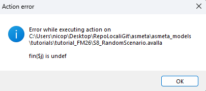
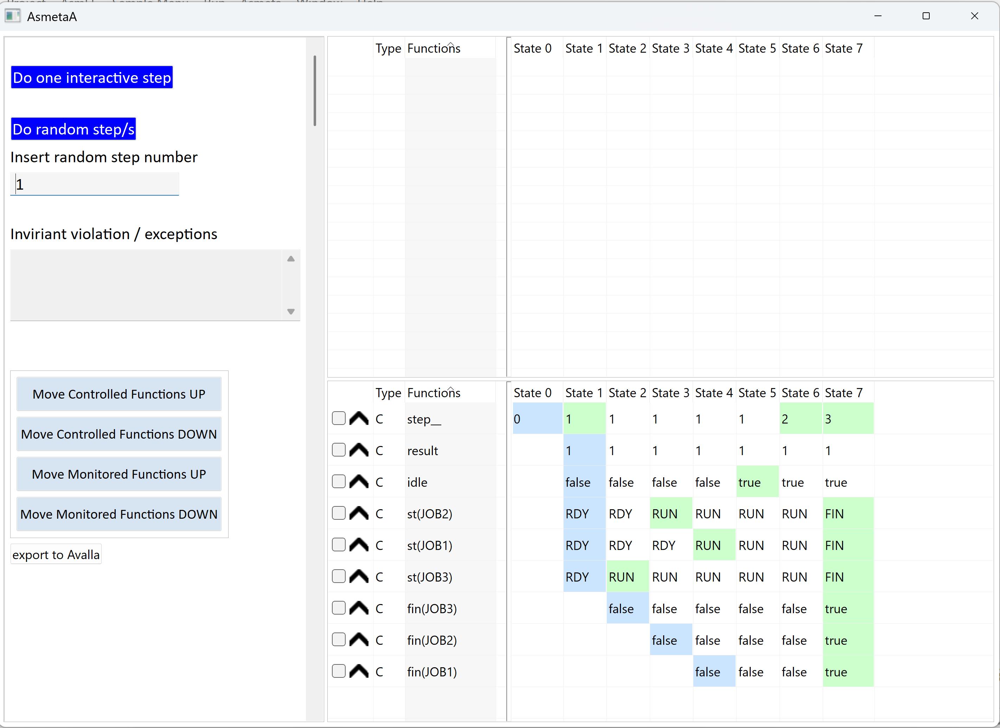
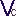
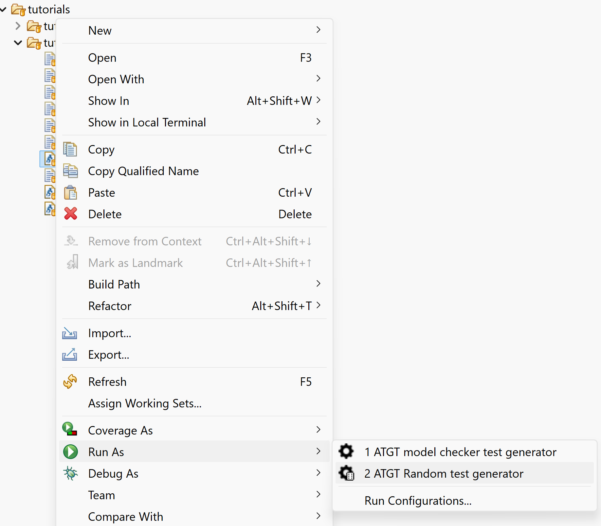

If you are reading this file, you are ready to reproduce the steps described in the paper “Scenario-Based Model Validation in Asmeta”.
This document is a restricted version of the README.pdf
available in the Zenodo replication package. Instructions on how to use
the Docker image and how to install Asmeta manually on Windows, Linux,
and macOS are omitted here, since the Docker environment is already
configured.
For the complete documentation, please refer to the Zenodo replication package.
The basics of scenario-based validation on Asmeta can be replicated as follows in the Eclipse environment:
S1_BasicStart.avalla in the Eclipse
editor.The output of the scenario execution is displayed in the console, and
all checks are passed:
Validation terminated without errors.
To test a failure, run validation for S2_Failure.avalla.
The output of the scenario execution is displayed in the console:
CHECK FAILED: st(JOB1) = RUN or st(JOB2) = RUN or st(JOB3) = RUN at step 1
[...]
WARNING: validation incomplete - some checks failed or errors occurredTo test an invariant violation, run validation for
S3_InvariantViolation.avalla. The console will report an
invariant violation in addition to the WARNING message:
invariant violation found.
You can also run validation for the scenarios with prefix from
S4_ to S7_.
S8_RandomScenario.avalla was obtained via random
generation (see below). Therefore, since Scheduler.asm
contains a choose rule, the validation can either complete
successfully or result in an Action Error:

SchedulerBlocks.avalla can be validated and the output
will indicate success. However, since it only defines blocks, it is not
concretely executed.
S5_UsingBlocks.avalla in the Eclipse
editor.Do one interactive step button to run the
scenario step by step. Press Do random step/s button and
set the number of steps in the text box under the inscription
Insert random step number to run automatically more than
one step.
Eventual invariant violation (e.g., from
S3_InvariantViolation.avalla) and errors (e.g., from
S8_RandomScenario.avalla) will appear in the
Invariant violation / exceptions box.
You can run scenario animation for all the scenarios with prefix from
S1_ to S8_.
S1_BasicStart.avalla in the Eclipse
editor.
button.The output of the scenario execution is displayed in the console.
Before the standard success message that indicate that all checks are
passed: Validation terminated without errors, a structured
presentation of coverage data is printed:
** Coverage Info: **
** covered rules: **
Scheduler::r_SetFinished()
-> branch coverage: 25.00%
-> rule coverage: 33.33%
-> update rule coverage: 0.00%
-> forall rule coverage: 33.33%
Scheduler::r_Main()
-> branch coverage: - (no branches to be covered)
-> rule coverage: 100.00%
-> update rule coverage: - (no update rules to be covered)
-> forall rule coverage: - (no forall rules to be covered)
Scheduler::r_SetRunning()
-> branch coverage: 50.00%
-> rule coverage: 66.67%
-> update rule coverage: 50.00%
-> forall rule coverage: - (no forall rules to be covered)
** NOT covered rules: **
You can run valiadtion with coverage for all the scenarios with
prefix from S1_ to S8_.
Scheduler.asm in the Eclipse editor.Do one interactive step button to run an
interactive by step, or press Do random step/s button and
set the number of steps in the text box under the inscription
Insert random step number to run more than one step with
random input.export to Avalla button
save the execution as an Avalla Scenario.The resulting scenario is diplayed on the console and it can be
copy/pasted in a new .avalla scenario.
Scheduler.asm in the Package
Explorer window of the Eclipse editor.Run as... ->
2 ATGT Random test generator.
The resulting set of scenarios is generated in the
abstracttests folder.